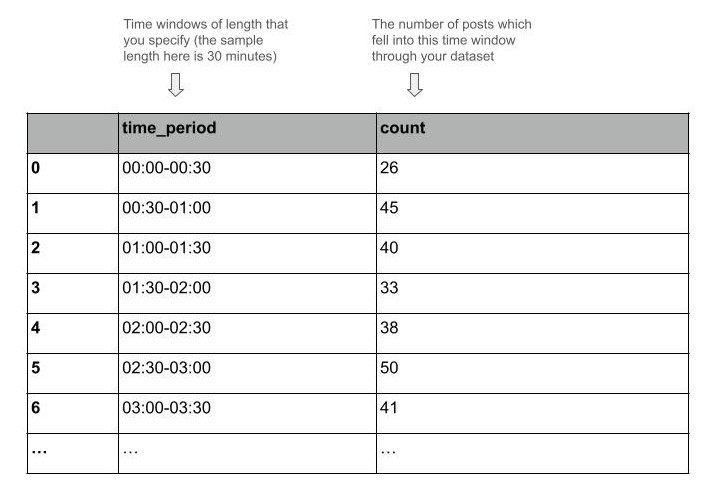
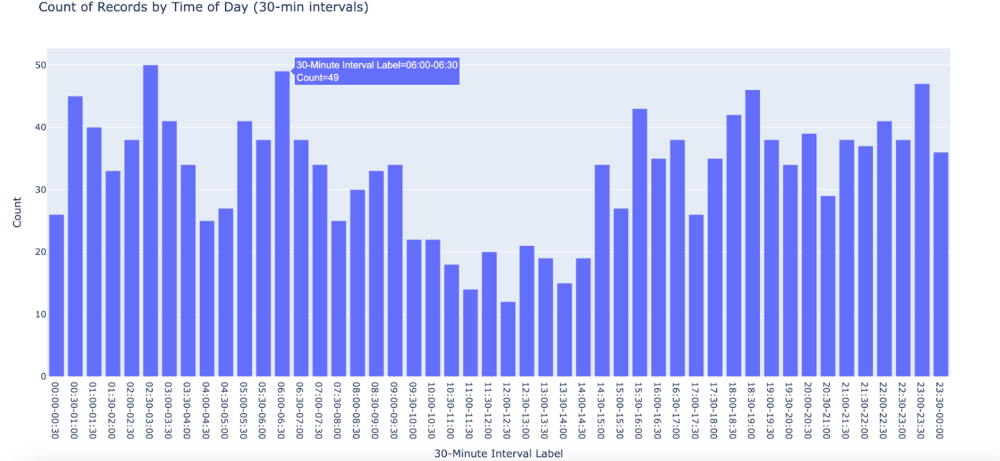

CIB Mango Tree
A Civic Tech DC Project
Unique Post Username
Unique Post Number
Date
Post Time
Post Content
- Set Time Window Length: Start by specifying the desired length of time windows for the 24-hour period (recommended: 30 minutes).
- Tally Posts: The test will count the posts made in each time window across your dataset. For example, with a 30-minute window, it will count posts from 12:00 AM to 12:30 AM, 12:30 AM to 1:00 AM, and so on.
- Graph Results: Finally, the test will display these frequencies in a csv file and bar chart, with each bar representing a specific time window across the 24-hour period.
Option 1: CSV Output
The test will produce a .csv file that provides the numerical tallies of posts for each
given time window in the 24-hour period.

Option 2: Bar Chart
The test will also produce a link to a dashboard that can be run locally in your browser (this dashboard does not involve
a connection to the internet). The dashboard will render the 24-hour graph of post frequency.
